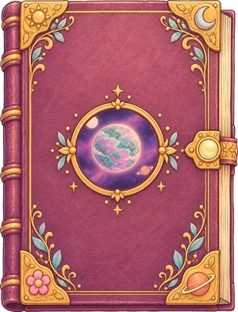
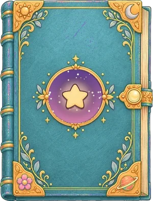
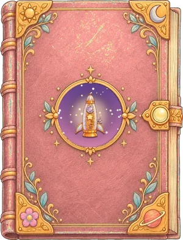
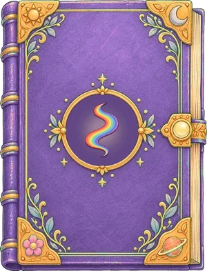
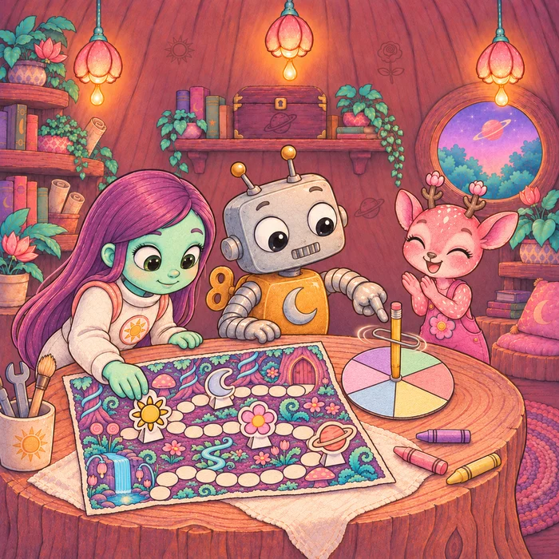
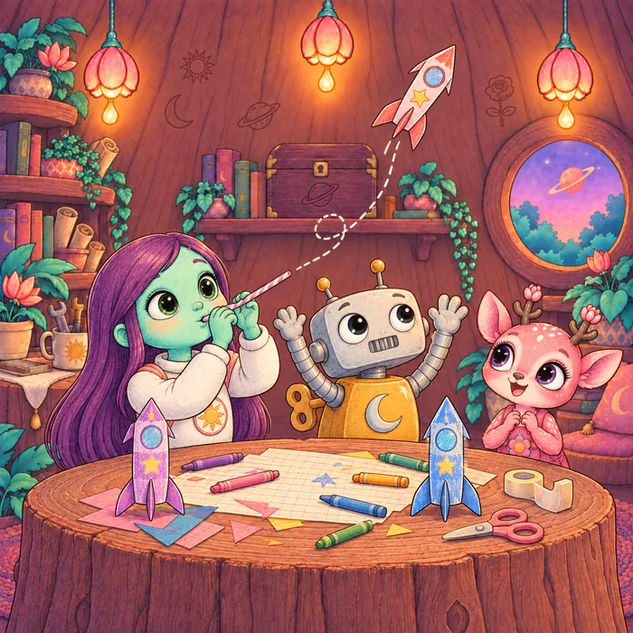
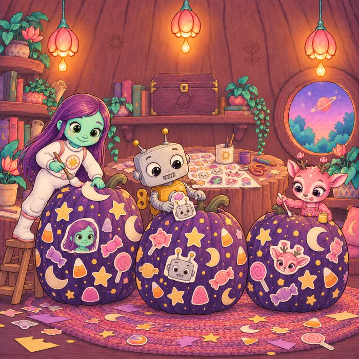

Every Starcora storybook has a printable twin. It has the same story and pictures as the book on screen, with a pencil-and-paper puzzle facing every page: codes to crack, mazes, counting, patterns and a cut-out to keep. A grown-up or your child can read the story aloud, and your child solves the puzzles.
It's a screen-free way to enjoy Starcora. The puzzles are different from the games online, so children who have already read the book on screen still get something new. Each book prints in colour on plain paper and comes in A4 and US Letter.
Printable storybooks

Book 0: Welcome to Starcora
Count the sky, follow the arrows, match each friend to their badge, sort frozen from melted, hop along the number stones, find the missing jigsaw piece and read a treasure map. Cut out Planet Starcora to keep.
Read Book 0 online first
Book 1: The Fallen Star
Crack the secret code, find the hidden lanterns, trace the swirls, wind up Oro, solve three vine mazes and keep the fallen star safe. Cut out a star medal to keep.
Read Book 1 online first
Book 2: The Star Rocket
Find the rocket pieces, solve the root mazes, pick the piece that fits, build the rocket in order, match the gears, count down a dot-to-dot and colour the rainbow by numbers. Cut out the star rocket to keep.
Read Book 2 online first
Book 3: The Rainbow Wisp
Rainbow sudoku, tangled ribbons, twin blooms, count the logs, mirror pictures, logic clues, odd one out and spot the difference. Cut out the rainbow wisp lantern to keep.
Read Book 3 online firstMore printable storybooks are on the way.
Printing tips
- Print at actual size (100%), so the cut-outs fit their spaces.
- Choose A4 in the UK, Europe and Australia, and US Letter in the US and Canada.
- The last page has cut-outs to keep. A grown-up can help with the scissors.
- The cover and last page have a code to scan, which opens the same story on starcora.world.
Printable activities
A board game, crafts and recipes with free printables, made with Sola, Oro and Rose.

Race to the CovaA free printable board game. Spin the paperclip spinner and race Sola, Oro and Rose home!
Paper straw rocketColour it, roll it, blow it! Print a Star Rocket and send it zooming with one big puff through a straw.
No-carve star and moon pumpkinsPaint a pumpkin purple and cover it in printable stars, moons and friends. Moonmist cloud cupsA no-bake yoghurt recipe with printable star toppers.
Moonmist cloud cupsA no-bake yoghurt recipe with printable star toppers.